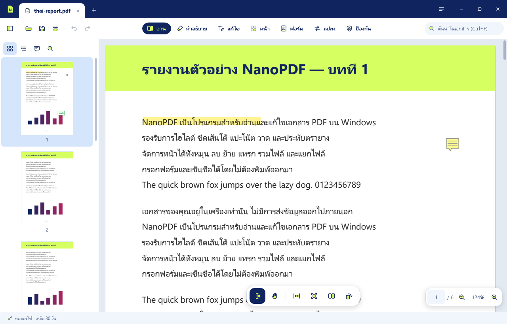
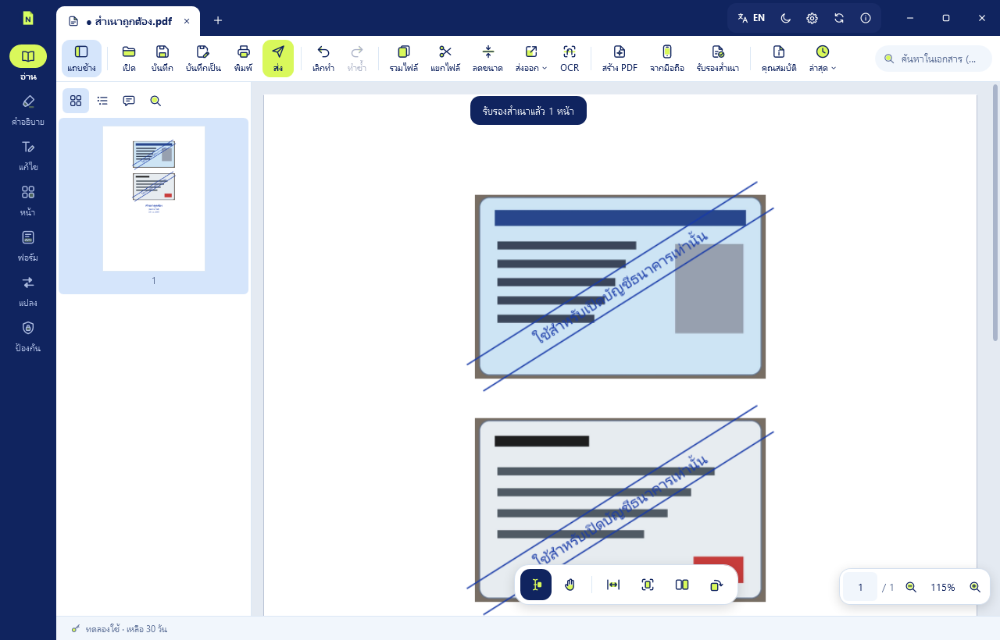
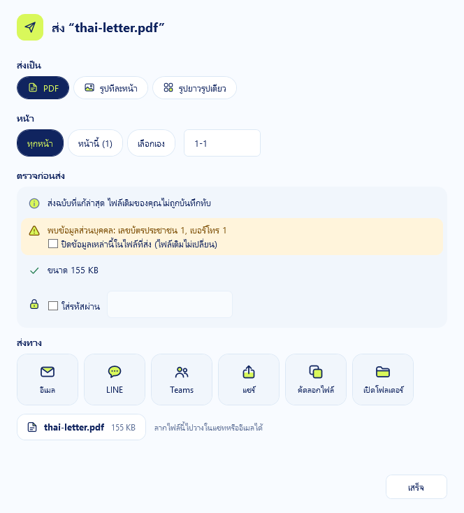
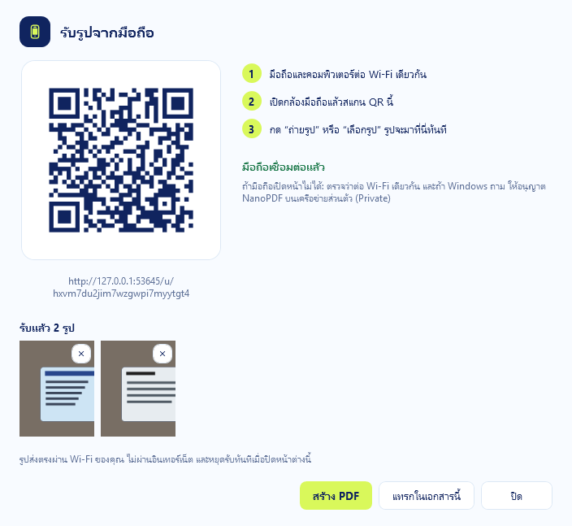
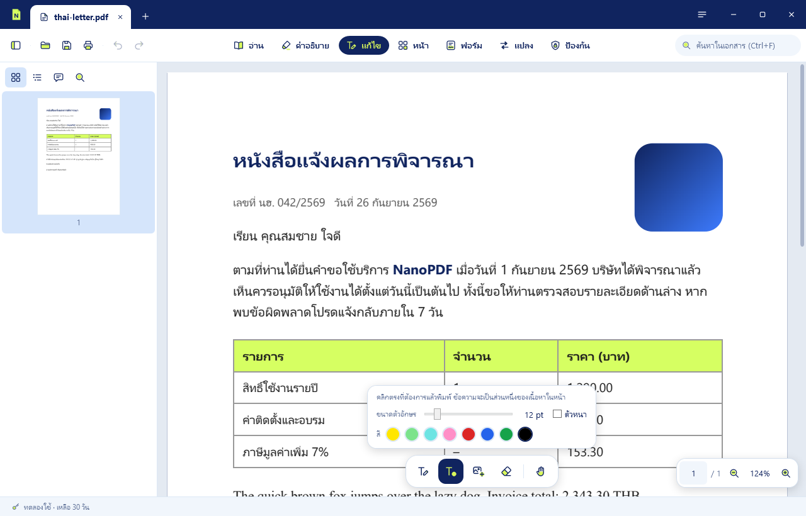
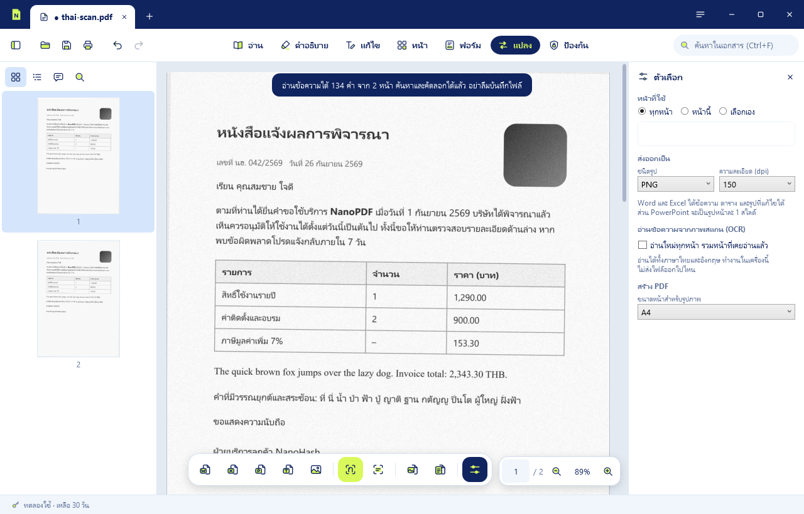
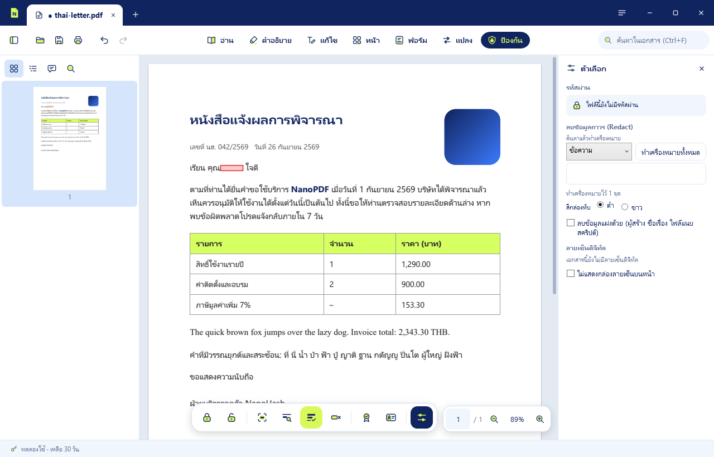
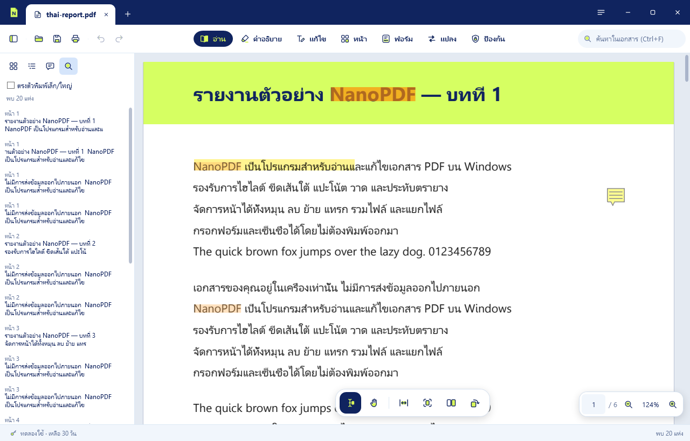

ทุกงาน PDF จบในโปรแกรมเดียว
อ่าน แก้ไข แปลงไฟล์ OCR รับรองสำเนา เซ็น และส่งต่อ ครบในที่เดียว ภาษาไทยใช้ได้ทุกส่วน

7 โหมด ครบทุกงานเอกสาร
อ่าน
เปิดดูลื่นไหล มีภาพย่อ สารบัญ และค้นหาข้อความทั้งเอกสาร
คำอธิบาย
ไฮไลต์ แปะโน้ต วาดรูปทรง ลูกศร กล่องข้อความ ตราประทับ และสติกเกอร์
แก้ไข
แก้ข้อความเดิมในเอกสาร โดยใช้ฟอนต์เดิมของไฟล์
หน้า
หมุน สลับ แทรก ลบ รวมไฟล์ แยกไฟล์ และบีบอัด
ฟอร์ม
กรอกฟอร์ม PDF และเซ็นชื่อได้โดยไม่ต้องพิมพ์ออกมา
แปลง
แปลง PDF เป็น Word, Excel, PowerPoint, รูปภาพ หรือข้อความ และแปลงรูปภาพกับไฟล์ Office เป็น PDF
ป้องกัน
ตั้งรหัสผ่าน ปิดข้อมูลแบบลบจริง และลายเซ็นดิจิทัล
ใช้ครบทั้ง 7 โหมดได้ฟรี
ดาวน์โหลด NanoPDFรับรอง ส่ง และแชร์เอกสาร จบในโปรแกรมเดียว
งานเอกสารที่ทำกันทุกวัน ตั้งแต่เซ็นสำเนาบัตรประชาชนไปจนถึงส่งไฟล์เข้าแชต ทำได้ใน NanoPDF โดยไม่ต้องพิมพ์ ไม่ต้องสแกน
รับรองสำเนาได้ ไม่ต้องพิมพ์
ใส่ข้อความ "สำเนาถูกต้อง" พร้อมลายเซ็น ชื่อ วันที่ และขีดคร่อมระบุว่าใช้สำหรับอะไร จัดบัตรหน้าหลังขนาดจริงลง A4 หน้าเดียว และปิดส่วนที่ไม่ต้องการให้เห็น เช่น เลขหลังบัตร
- จัดบัตรขนาดจริง 2 ใบต่อหน้า A4 และตัดขอบบัตรให้อัตโนมัติ
- เลือกวัตถุประสงค์สำเร็จรูป เช่น สมัครงาน เปิดบัญชีธนาคาร ยื่นวีซ่า
- หมึกน้ำเงินหรือดำ และสลับเป็นข้อความภาษาอังกฤษได้

ส่งไฟล์ ไม่หลุดข้อมูลส่วนตัว
ก่อนส่ง NanoPDF ตรวจหาเลขบัตรประชาชน เบอร์โทร เลขบัญชี และอีเมลในเอกสาร แล้วลบออกจากไฟล์ที่ส่งได้ในคลิกเดียว ไฟล์ต้นฉบับของคุณไม่เปลี่ยน
- ส่งเป็น PDF รูปทีละหน้า หรือรูปยาวรูปเดียว
- ส่งทางอีเมล LINE Teams หรือ NanoShare
- ใส่รหัสผ่านและลดขนาดไฟล์ก่อนส่งได้

ถ่ายจากมือถือ ได้ PDF ทันที
สแกน QR บนจอด้วยมือถือ แล้วถ่ายรูปเอกสารหรือบัตร รูปจะเข้ามาที่ NanoPDF ทันที รวมเป็น PDF หรือแทรกในเอกสารที่เปิดอยู่ ไม่ต้องติดตั้งแอปบนมือถือ
- ส่งผ่าน Wi-Fi ในบ้านหรือออฟฟิศ ไม่ผ่านอินเทอร์เน็ต
- ใช้ได้ทั้ง iPhone และ Android

แชร์ด้วย NanoShare
ให้อีกฝ่ายสแกน QR เปิดลิงก์ หรือพิมพ์รหัสสั้น ๆ ไฟล์จะส่งตรงจากเครื่องคุณถึงเครื่องเขา
- เข้ารหัส AES-256 บนเครื่อง ไม่มีไฟล์เก็บบนเซิร์ฟเวอร์
- ไม่จำกัดขนาดไฟล์ ผู้รับไม่ต้องสมัครสมาชิก
รูปทรงและสติกเกอร์
วาดเส้นตรง ลูกศร เส้นโค้ง สี่เหลี่ยม และวงกลม ติดสติกเกอร์คำ 12 แบบ และอีโมจิสี 77 แบบ เปิดดูได้ในโปรแกรม PDF ทุกตัว
แก้ข้อความที่มีอยู่แล้วได้จริง
คลิกที่บรรทัดแล้วพิมพ์ได้เลย NanoPDF จะเก็บส่วนที่ไม่ได้แก้ไว้เหมือนเดิม และใช้ฟอนต์เดิมของเอกสารกับข้อความใหม่

แปลงไฟล์และ OCR
ส่งออกเป็นไฟล์ Word, Excel และ PowerPoint ที่เปิดใน Microsoft Office ได้เรียบร้อย ส่วนเอกสารสแกนจะค้นหาข้อความได้ด้วย OCR ภาษาไทยและอังกฤษ

ปิดข้อมูลแบบลบจริง ลงลายเซ็นอย่างมั่นใจ
การปิดข้อมูลจะลบเนื้อหาออกจริง ไม่ใช่แค่วางแถบดำทับ และตรวจผลให้ทุกครั้ง ลงลายเซ็นด้วยใบรับรองดิจิทัล และตรวจสอบลายเซ็นในไฟล์ที่ได้รับ

สร้างมาเพื่อเอกสารภาษาไทย
ภาษาไทยใน PDF ผิดได้ง่าย ทั้งสระลอย ตัดคำผิด และค้นหาไม่เจอ NanoPDF วางสระและวรรณยุกต์ถูกตำแหน่ง ค้นหาและเลือกคำไทยได้ และอ่านเอกสารสแกนภาษาไทยด้วย OCR
- สระและวรรณยุกต์อยู่ถูกตำแหน่ง
- ค้นหาและเลือกคำภาษาไทยได้
- OCR ไทยและอังกฤษ ใช้ได้โดยไม่ต้องต่ออินเทอร์เน็ต

เอกสารของคุณไม่ผ่านเซิร์ฟเวอร์ของเรา
ประมวลผลในเครื่อง
การเปิด แก้ไข แปลงไฟล์ และ OCR ทำบนเครื่องของคุณทั้งหมด
ต่ออินเทอร์เน็ตเท่าที่จำเป็น
NanoPDF ต่ออินเทอร์เน็ตเพื่อเช็กอัปเดต ประทับเวลาลายเซ็น และเมื่อคุณเลือกแชร์ด้วย NanoShare ซึ่งส่งไฟล์ตรงถึงอีกเครื่องแบบเข้ารหัส
log ไม่เก็บเนื้อหาเอกสาร
log บันทึกเฉพาะการทำงานของโปรแกรม ไม่บันทึกเนื้อหาในเอกสารของคุณ
ใช้ฟรีทุกฟีเจอร์ ครบ 30 วันแล้วสนับสนุนเราได้
ไม่ต้องสมัครสมาชิก ไม่ต้องใช้บัตร ครบ 30 วันแล้วยังใช้ได้ทุกฟีเจอร์ตามเดิม ถ้าชอบ สนับสนุนเราได้ด้วย License Key ซึ่งเปิดใช้แบบออฟไลน์
คำถามที่พบบ่อย
ติดตั้งอย่างไร?
ดาวน์โหลด NanoPDF-Setup.exe แล้วดับเบิลคลิก โปรแกรมจะติดตั้งให้ผู้ใช้คนปัจจุบันโดยไม่ต้องใช้สิทธิ์ผู้ดูแล และถอนออกได้จาก Settings > Apps ถ้าไม่อยากติดตั้ง ใช้ NanoPDF.exe จากหน้า Releases เปิดใช้ได้ทันที ส่วน OCR ต้องใช้ Microsoft Visual C++ runtime ถ้าเครื่องยังไม่มี NanoPDF จะพาไปหน้าดาวน์โหลดให้
เอกสารถูกอัปโหลดไปที่ไหนไหม?
ไม่ เอกสารประมวลผลบนเครื่องของคุณ ถ้าเลือกแชร์ด้วย NanoShare ไฟล์จะส่งตรงถึงอีกเครื่องแบบเข้ารหัส โดยไม่ถูกเก็บบนเซิร์ฟเวอร์ นอกจากนั้นอินเทอร์เน็ตใช้แค่เช็กอัปเดต และประทับเวลาลายเซ็นถ้าคุณใช้ฟีเจอร์นี้
ครบ 30 วันแล้วจะเป็นอย่างไร?
ยังใช้ได้ทุกฟีเจอร์ตามเดิม จะมีกล่องชวนสนับสนุนตอนเปิดโปรแกรม เมื่อสนับสนุนด้วย License Key กล่องนี้จะหายไป
รองรับ Windows รุ่นไหน?
Windows 10 และ Windows 11 แบบ 64-bit